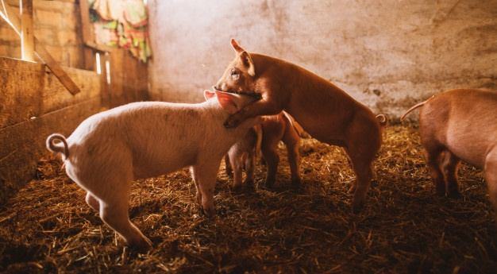

Cochon, cet omnivore fermier
On l’appelle
cochon domestique ou
porc. Ce mammifère omnivore élevé pour sa viande appartient à la famille des Suidés que l’on nomme aussi Porcins. Il s’agit d’une sous-espèce de sanglier sauvage, et ces deux animaux peuvent se croiser.
La jeune femelle du cochon est la
cochette, la truie est la femelle adulte, le goret, cochonnet ou porcelet est le petit non sevré (âgé de moins de 28 jours selon la réglementation française) et sur l’étal du boucher on le nomme
cochon de lait. Quant au mâle adulte, il est appelé
verrat. Cette grande famille d’animaux de la ferme peut être élevée selon deux méthodes bien distinctes, à savoir :
- En plein air : les cochons évoluent à l’extérieur de janvier à décembre et bénéficient d’abris en libre accès où ils peuvent manger, s’abreuver, se reposer.
- En élevage intensif : les porcs sont regroupés en grand nombre dans des locaux où ils sont engraissés. Ils ne disposent pas d’un espace extérieur. La législation impose une surface bien définie par tête en fonction de l’âge du cochon, à savoir par exemple 0,15 m² pour un porcelet et 1 m² pour un porc dont le poids est supérieur à 110 kg.